Briefing

The CEO of our new eCommerce company hired us to design a new ad strategy that would generate the maximum income for the company. Hence, our goal is to identify the most profitable customer targets and determine which products we should show them in order to achieve the highest possible conversion rate. They provided us with this dataset containing information about customer demographics and their purchase behavior. This is a wealth of valuable data available in most eCommerce platforms thanks to account registrations. Let’s see how we can design a great ad campaign using data analysis and business intelligence!
Set Up
Installing Packages
# Execute this chunck just in case the libraries do not load properly
#install.packages("readr")
#install.packages("Rtools")
#install.packages("dplyr")
#install.packages("ggplot2")
#install.packages("scales")
#install.packages("sqldf")
#install.packages("hrbrthemes")
#install.packages("extrafont")
#install.packages("rmdformats")
#install.packages("RColorBrewer")
#Install.packages("lubridate")library(readr)
library(dplyr)
library(ggplot2)
library(scales)
library(sqldf)
library(stats)
library(randomForest)
library(RColorBrewer)
library(lubridate)Import Dataset
#Make sure you change 'Data.csv' for the proper location of the dataset in your repository
Data <- read_csv("Data.csv")
#You can download dataset from: https://www.kaggle.com/datasets/salahuddinahmedshuvo/ecommerce-consumer-behavior-analysis-data
#Credits to: Salahuddin Ahmed : https://www.kaggle.com/salahuddinahmedshuvo Thank You for this great Dataset!Check The Database Upload
#Let's see how the dataset looks!
head(Data)## # A tibble: 6 × 28
## Customer_ID Age Gender Income_Level Marital_Status Education_Level
## <chr> <dbl> <chr> <chr> <chr> <chr>
## 1 37-611-6911 22 Female Middle Married Bachelor's
## 2 29-392-9296 49 Male High Married High School
## 3 84-649-5117 24 Female Middle Single Master's
## 4 48-980-6078 29 Female Middle Single Master's
## 5 91-170-9072 33 Female Middle Widowed High School
## 6 82-561-4233 45 Male Middle Married Master's
## # ℹ 22 more variables: Occupation <chr>, Location <chr>,
## # Purchase_Category <chr>, Purchase_Amount <chr>,
## # Frequency_of_Purchase <dbl>, Purchase_Channel <chr>, Brand_Loyalty <dbl>,
## # Product_Rating <dbl>, `Time_Spent_on_Product_Research(hours)` <dbl>,
## # Social_Media_Influence <chr>, Discount_Sensitivity <chr>,
## # Return_Rate <dbl>, Customer_Satisfaction <dbl>, Engagement_with_Ads <chr>,
## # Device_Used_for_Shopping <chr>, Payment_Method <chr>, …Data cleaning & preparation
The dataset has loaded correctly. We can see that it contains 28 columns, many of which have different data types. However, they are not correctly identified by R, which may make it difficult for us to obtain statistics and other insights from the data. Therefore, we will fix this.
#We might use Customer_ID for grouping later, therefore, we have to make it a factor variable, the other variables are logic to convert to their corresponding Data Type
Data2 <- Data %>%
mutate(
Customer_ID = as.character(Customer_ID), # ID is usually a character to preserve leading zeros
Age = as.integer(Age), # Age is a whole number
Gender = as.factor(Gender), # Gender is categorical
Income_Level = as.factor(Income_Level), # Income categories (e.g., Low, Medium, High)
Marital_Status = as.factor(Marital_Status), # Categorical (Single, Married, etc.)
Education_Level = as.factor(Education_Level), # Categorical
Occupation = as.factor(Occupation), # Categorical
Location = as.factor(Location), # Categorical (City/Region)
Purchase_Category = as.factor(Purchase_Category), # Categorical
Purchase_Amount = as.numeric(Purchase_Amount), # Numeric (money amount)
Frequency_of_Purchase = as.integer(Frequency_of_Purchase), # Whole number (e.g., times per month)
Purchase_Channel = as.factor(Purchase_Channel), # Categorical (Online, In-Store, etc.)
Brand_Loyalty = as.numeric(Brand_Loyalty), # likert scale 1-5
Product_Rating = as.numeric(Product_Rating), # Numeric (1-5 stars)
`Time_Spent_on_Product_Research(hours)` = as.numeric(`Time_Spent_on_Product_Research(hours)`), # Numeric
Social_Media_Influence = as.factor(Social_Media_Influence), # Categorical (e.g., High, Medium, Low)
Discount_Sensitivity = as.factor(Discount_Sensitivity), # Categorical
Return_Rate = as.numeric(Return_Rate), # Numeric (percentage or count)
Customer_Satisfaction = as.numeric(Customer_Satisfaction), # Numeric (1-10 scale)
Engagement_with_Ads = as.factor(Engagement_with_Ads), # Categorical
Device_Used_for_Shopping = as.factor(Device_Used_for_Shopping), # Categorical
Payment_Method = as.factor(Payment_Method), # Categorical (e.g., Credit Card, PayPal)
Time_of_Purchase = as.POSIXct(Time_of_Purchase, format="%m/%d/%Y"), # Date-Time format
Discount_Used = as.logical(Discount_Used), # Boolean (TRUE/FALSE)
Customer_Loyalty_Program_Member = as.logical(Customer_Loyalty_Program_Member), # Boolean (TRUE/FALSE)
Purchase_Intent = as.factor(Purchase_Intent), # Categorical (e.g., High, Medium, Low)
Shipping_Preference = as.factor(Shipping_Preference), # Categorical
Time_to_Decision = as.numeric(Time_to_Decision) # Numeric (e.g., minutes/hours)
)Now, lets evaluate how the data set looks like!
str(Data2)## tibble [1,000 × 28] (S3: tbl_df/tbl/data.frame)
## $ Customer_ID : chr [1:1000] "37-611-6911" "29-392-9296" "84-649-5117" "48-980-6078" ...
## $ Age : int [1:1000] 22 49 24 29 33 45 21 39 24 25 ...
## $ Gender : Factor w/ 8 levels "Agender","Bigender",..: 3 6 3 3 3 6 3 6 3 2 ...
## $ Income_Level : Factor w/ 2 levels "High","Middle": 2 1 2 2 2 2 2 2 1 1 ...
## $ Marital_Status : Factor w/ 4 levels "Divorced","Married",..: 2 2 3 3 4 2 1 3 1 2 ...
## $ Education_Level : Factor w/ 3 levels "Bachelor's","High School",..: 1 2 3 3 2 3 2 2 3 1 ...
## $ Occupation : Factor w/ 2 levels "High","Middle": 2 1 1 2 2 1 2 2 2 1 ...
## $ Location : Factor w/ 969 levels "‘Arad","‘Aşīrah ash Shamālīyah",..: 202 308 310 902 553 89 446 830 249 669 ...
## $ Purchase_Category : Factor w/ 24 levels "Animal Feed",..: 10 8 19 14 9 19 9 5 19 22 ...
## $ Purchase_Amount : num [1:1000] NA NA NA NA NA NA NA NA NA NA ...
## $ Frequency_of_Purchase : int [1:1000] 4 11 2 6 6 8 12 6 8 7 ...
## $ Purchase_Channel : Factor w/ 3 levels "In-Store","Mixed",..: 2 1 2 2 2 2 3 3 1 3 ...
## $ Brand_Loyalty : num [1:1000] 5 3 5 3 3 3 2 5 3 2 ...
## $ Product_Rating : num [1:1000] 5 1 5 1 4 3 5 4 5 5 ...
## $ Time_Spent_on_Product_Research(hours): num [1:1000] 2 2 0.3 1 0 0 1 1 0 1 ...
## $ Social_Media_Influence : Factor w/ 4 levels "High","Low","Medium",..: 4 3 2 1 3 1 1 2 2 4 ...
## $ Discount_Sensitivity : Factor w/ 3 levels "Not Sensitive",..: 2 1 1 2 1 1 2 2 3 2 ...
## $ Return_Rate : num [1:1000] 1 1 1 0 2 2 0 2 1 1 ...
## $ Customer_Satisfaction : num [1:1000] 7 5 7 1 10 3 9 9 2 5 ...
## $ Engagement_with_Ads : Factor w/ 4 levels "High","Low","Medium",..: 4 1 2 4 4 4 2 4 1 3 ...
## $ Device_Used_for_Shopping : Factor w/ 3 levels "Desktop","Smartphone",..: 3 3 2 2 2 3 1 1 1 3 ...
## $ Payment_Method : Factor w/ 5 levels "Cash","Credit Card",..: 2 5 3 4 3 3 3 2 1 5 ...
## $ Time_of_Purchase : POSIXct[1:1000], format: "2024-03-01" "2024-04-16" ...
## $ Discount_Used : logi [1:1000] TRUE TRUE TRUE TRUE FALSE FALSE ...
## $ Customer_Loyalty_Program_Member : logi [1:1000] FALSE FALSE TRUE TRUE FALSE FALSE ...
## $ Purchase_Intent : Factor w/ 4 levels "Impulsive","Need-based",..: 2 4 1 2 4 3 2 1 2 2 ...
## $ Shipping_Preference : Factor w/ 3 levels "Express","No Preference",..: 2 3 2 1 2 2 1 2 3 2 ...
## $ Time_to_Decision : num [1:1000] 2 6 3 10 4 7 13 13 7 13 ...Great! We now have the correct data types for our variables. However, there is something that might seem like a problem—the variable “Purchase Amount” is full of NA values. These are null values, and it would be a significant issue if this variable contained only NA values, as it is crucial for generating impactful insights. Let’s check if that is the case.
sum(is.na(Data2$Purchase_Amount))## [1] 1000As you can see, the entire column is filled with NA values. This is because the column is written as “$.”—the currency symbol causes the conversion to produce NA values since it is not a numeric character. Let’s remove the symbol and process the column again.
Data2$Purchase_Amount <- gsub("\\$", "", Data$Purchase_Amount)
Data2$Purchase_Amount <- as.numeric(Data2$Purchase_Amount)
str(Data2$Purchase_Amount)## num [1:1000] 334 222 426 101 212 ...Awesome! Now that our variables have the correct data type let’s take a look to the statistics of this data frame.
summary(Data2)## Customer_ID Age Gender Income_Level
## Length:1000 Min. :18.0 Female :452 High :515
## Class :character 1st Qu.:26.0 Male :449 Middle:485
## Mode :character Median :34.5 Bigender : 20
## Mean :34.3 Agender : 19
## 3rd Qu.:42.0 Genderfluid: 17
## Max. :50.0 Non-binary : 16
## (Other) : 27
## Marital_Status Education_Level Occupation Location
## Divorced:245 Bachelor's :341 High :517 Oslo : 4
## Married :253 High School:331 Middle:483 Créteil : 3
## Single :242 Master's :328 Göteborg : 3
## Widowed :260 Al Jīzah : 2
## Araci : 2
## Bronnitsy: 2
## (Other) :984
## Purchase_Category Purchase_Amount Frequency_of_Purchase
## Electronics : 54 Min. : 50.71 Min. : 2.000
## Sports & Outdoors : 51 1st Qu.:162.24 1st Qu.: 4.000
## Home Appliances : 50 Median :276.17 Median : 7.000
## Jewelry & Accessories: 50 Mean :275.06 Mean : 6.945
## Toys & Games : 47 3rd Qu.:388.98 3rd Qu.:10.000
## Animal Feed : 44 Max. :498.33 Max. :12.000
## (Other) :704
## Purchase_Channel Brand_Loyalty Product_Rating
## In-Store:326 Min. :1.000 Min. :1.000
## Mixed :340 1st Qu.:2.000 1st Qu.:2.000
## Online :334 Median :3.000 Median :3.000
## Mean :3.026 Mean :3.033
## 3rd Qu.:4.000 3rd Qu.:4.000
## Max. :5.000 Max. :5.000
##
## Time_Spent_on_Product_Research(hours) Social_Media_Influence
## Min. :0.000 High :268
## 1st Qu.:0.000 Low :249
## Median :1.000 Medium:236
## Mean :1.013 None :247
## 3rd Qu.:2.000
## Max. :2.000
##
## Discount_Sensitivity Return_Rate Customer_Satisfaction
## Not Sensitive :331 Min. :0.000 Min. : 1.000
## Somewhat Sensitive:319 1st Qu.:0.000 1st Qu.: 3.000
## Very Sensitive :350 Median :1.000 Median : 5.000
## Mean :0.954 Mean : 5.399
## 3rd Qu.:2.000 3rd Qu.: 8.000
## Max. :2.000 Max. :10.000
##
## Engagement_with_Ads Device_Used_for_Shopping Payment_Method
## High :270 Desktop :350 Cash :187
## Low :230 Smartphone:311 Credit Card:194
## Medium:244 Tablet :339 Debit Card :196
## None :256 Other :204
## PayPal :219
##
##
## Time_of_Purchase Discount_Used
## Min. :2024-01-01 00:00:00.0 Mode :logical
## 1st Qu.:2024-04-04 00:00:00.0 FALSE:479
## Median :2024-06-30 00:00:00.0 TRUE :521
## Mean :2024-06-29 06:31:40.7
## 3rd Qu.:2024-09-19 00:00:00.0
## Max. :2024-12-30 00:00:00.0
##
## Customer_Loyalty_Program_Member Purchase_Intent Shipping_Preference
## Mode :logical Impulsive :248 Express :294
## FALSE:509 Need-based :256 No Preference:372
## TRUE :491 Planned :247 Standard :334
## Wants-based:249
##
##
##
## Time_to_Decision
## Min. : 1.000
## 1st Qu.: 4.000
## Median : 8.000
## Mean : 7.547
## 3rd Qu.:11.000
## Max. :14.000
## Wow! This is great. From the summary of the dataset, we can start uncovering meaningful insights about the business we are working with. For example:
First, the database appears to be well-balanced in terms of income levels, marital status, and purchase categories.
We also notice that the company seems to be focusing more on one gender, possibly due to a gender inclusion update in their values.
Additionally, most customers purchase through mixed channels, meaning the majority shop both online and in-store.
The majority of payments are made using PayPal.
Most clients are highly sensitive to discounts; however, at the same time, they do not belong to the customer loyalty program.
Data Visualization
We’ve already discovered some insights about the company’s clients and their behavior. However, we need more information to propose an ad strategy that will be worth the investment. Let’s create some cross-visualizations to uncover deeper insights from our data.
First, I would really like to determine which channel generates more revenue. Since running a physical store is more expensive than maintaining a website, the expectation would be that the store generates more income.
# Let's take advantage of sqldf function and create a dataset for this plot using SQL
sales_per_channel <- sqldf(
"SELECT `Purchase_Channel`, SUM(`Purchase_Amount`) AS sales_tot
FROM Data2
GROUP BY `Purchase_Channel`
ORDER BY sales_tot DESC")
# Bar Plot
plot_channel_sales <- ggplot(sales_per_channel, aes(x = reorder(`Purchase_Channel`, sales_tot), y = sales_tot, fill = `Purchase_Channel`)) +
geom_bar(stat = "identity") +
coord_flip() +
labs(title = "Total sales by Purchase Channel",
x = "Purchase Channel",
y = "Purchase Volume") +
theme(
panel.background = element_rect(fill = "gray20", color = "black"),
plot.background = element_rect(fill = "gray20"),
panel.grid.major = element_line(color = "white", linetype = "dashed"),
panel.grid.minor = element_line(color = "white", linetype = "dashed"),
axis.text = element_text(color = "white"),
axis.title = element_text(color = "white"),
plot.title = element_text(color = "white", hjust = 0.5, face = "bold"),
legend.background = element_rect(fill = "gray20", color = "black"),
legend.text = element_text(color = "white"),
legend.title = element_text(color = "white")) +
scale_y_continuous(labels = dollar_format(prefix = "$"))
plot_channel_sales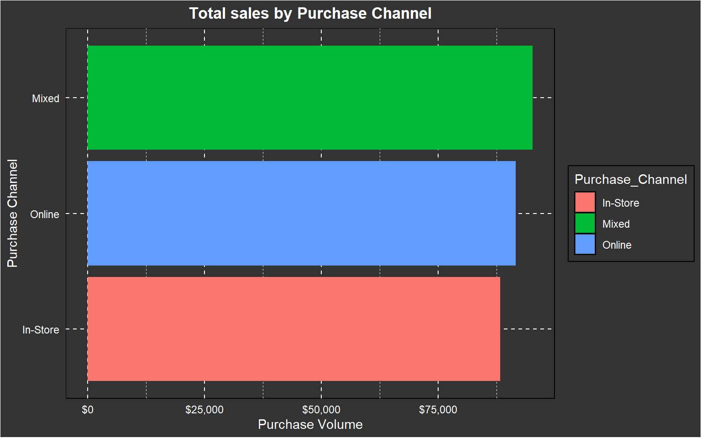
We can clearly see that the channel with the highest traffic is the online channel. Given that it is the most popular, with lower costs for maintaining a website, and considering the need to create an ad campaign to boost sales, we will focus solely on analyzing online sales and develop a proposal based on the insights we gather.
Before moving forward, we need to ensure that this sales volume isn’t simply due to a higher number of purchases. Therefore, we will plot the number of purchases by channel.
ggplot(Data2, aes(x = Purchase_Channel, fill = Purchase_Channel)) +
geom_bar() +
labs(title = "Number of Purchases per Channel",
x = "Purchase Channel",
y = "Number of Purchases") +
theme(
panel.background = element_rect(fill = "gray20", color = "black"),
plot.background = element_rect(fill = "gray20"),
panel.grid.major = element_line(color = "white", linetype = "dashed"),
panel.grid.minor = element_line(color = "white", linetype = "dashed"),
axis.text = element_text(color = "white"),
axis.title = element_text(color = "white"),
plot.title = element_text(color = "white", hjust = 0.5, face = "bold"),
legend.background = element_rect(fill = "gray20", color = "black"),
legend.text = element_text(color = "white"),
legend.title = element_text(color = "white"))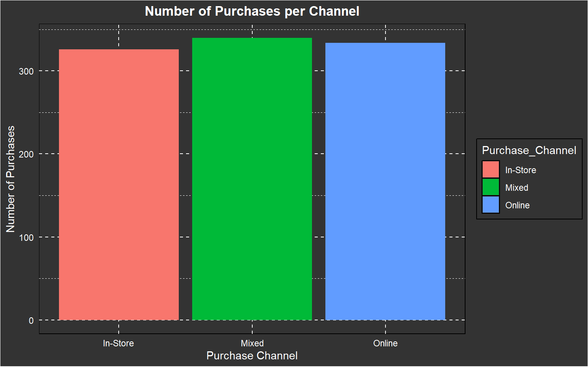
Great, we can see that the number of sales per channel is fairly balanced, with a difference of only 8 sales, which is barely a 2% difference. Given the size of the dataset, this difference is not significant, so we will proceed with our analysis. From now on, we will focus solely on the Online channel, as running ads for the website will be easier for the marketing team, and it will also make the analysis more straightforward. Let’s create a new dataset using the channel filter.
# Filter only Online Channel orders
online_orders <- Data2 %>%
filter(Purchase_Channel == "Online")Now let’s see which category brings more income focusing in the online channel
# Plot 1: Total Purchase Amount per Category
plot_revenue <- ggplot(online_orders, aes(x = reorder(Purchase_Category, Purchase_Amount, sum), y = Purchase_Amount, fill = Purchase_Category)) +
geom_bar(stat = "identity") +
labs(title = "Total Purchase Amount by Category (Online)",
x = "Purchase Category",
y = "Total Purchase Amount") +
theme_minimal()
# Plot 2: Number of Purchases per Category
plot_popularity <- ggplot(online_orders, aes(x = Purchase_Category, fill = Purchase_Category)) +
geom_bar() +
labs(title = "Number of Purchases by Category (Online)",
x = "Purchase Category",
y = "Number of Purchases") +
theme_minimal()
plot_revenue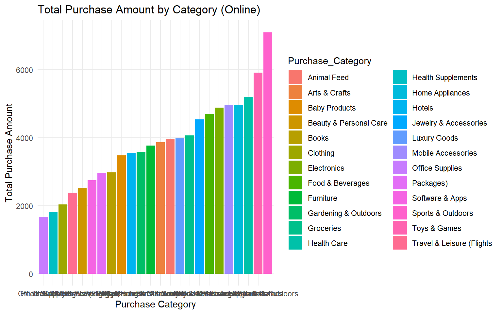
plot_popularity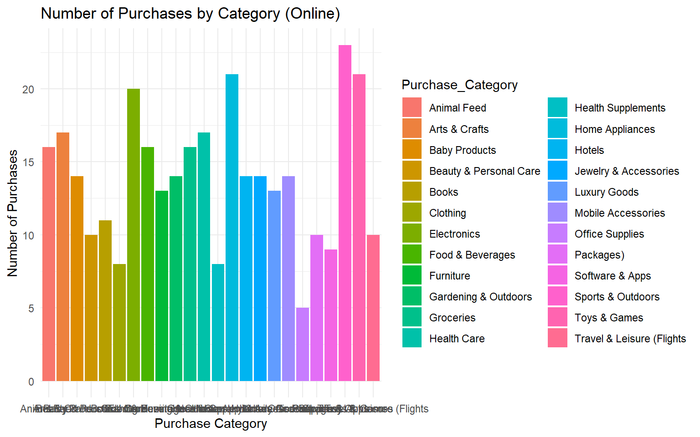
Oh no! This looks pretty cluttered with so many categories, and we’re not able to extract any useful insights from it. Let’s narrow it down by filtering the top 5 categories, so we can gain better insights. We’ll also plot them separately.
# Get the top 5 categories by number of purchases
top5_popularity <- online_orders %>%
count(Purchase_Category, name = "num_purchases") %>%
arrange(desc(num_purchases)) %>%
slice_head(n = 5) # Select top 5
# Top 5 Categories by Number of Purchases
plot_Cat_popularity <- ggplot(top5_popularity, aes(x = reorder(Purchase_Category, num_purchases), y = num_purchases, fill = Purchase_Category)) +
geom_bar(stat = "identity") +
coord_flip() +
labs(title = "Top 5 Categories by Popularity (Online)",
x = "Purchase Category",
y = "Number of Purchases") +
theme(
panel.background = element_rect(fill = "gray20", color = "black"),
plot.background = element_rect(fill = "gray20"),
panel.grid.major = element_line(color = "white", linetype = "dashed"),
panel.grid.minor = element_line(color = "white", linetype = "dashed"),
axis.text = element_text(color = "white"),
axis.title = element_text(color = "white"),
plot.title = element_text(color = "white", hjust = 0.5, face = "bold"),
legend.background = element_rect(fill = "gray20", color = "black"),
legend.text = element_text(color = "white"),
legend.title = element_text(color = "white"))
plot_Cat_popularity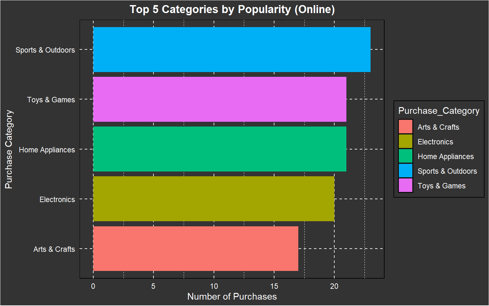
# Get the top 5 categories by revenue of purchases
top5_revenue <- online_orders %>%
group_by(Purchase_Category) %>%
summarise(total_revenue = sum(Purchase_Amount)) %>%
arrange(desc(total_revenue)) %>%
slice_head(n = 5) # Select top 5
# Plot: Top 5 Categories by Revenue
plot_Cat_revenue <- ggplot(top5_revenue, aes(x = reorder(Purchase_Category, total_revenue), y = total_revenue, fill = Purchase_Category)) +
geom_bar(stat = "identity") +
coord_flip() +
labs(title = "Top 5 Categories by Revenue (Online)",
x = "Purchase Category",
y = "Total Purchase Amount") +
theme(
panel.background = element_rect(fill = "gray20", color = "black"),
plot.background = element_rect(fill = "gray20"),
panel.grid.major = element_line(color = "white", linetype = "dashed"),
panel.grid.minor = element_line(color = "white", linetype = "dashed"),
axis.text = element_text(color = "white"),
axis.title = element_text(color = "white"),
plot.title = element_text(color = "white", hjust = 0.5, face = "bold"),
legend.background = element_rect(fill = "gray20", color = "black"),
legend.text = element_text(color = "white"),
legend.title = element_text(color = "white"))
plot_Cat_revenue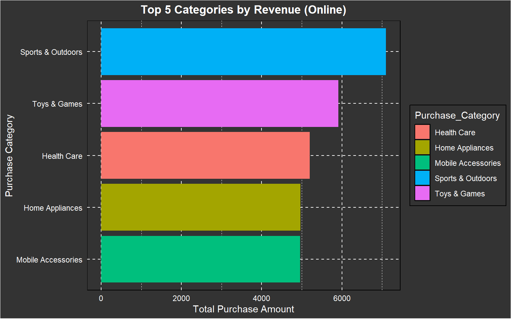
Very interesting! It’s clear that we have a clear winner: Sports & Outdoors. Also, considering that summer is just around the corner, running an ad campaign for this product would be a great proposal. Toys and Games come in second place in both graphs, which is also promising for sales, as kids love summer and will likely be getting new gear to play with their friends or at home.
Next, let’s analyze which gender group is the most profitable for our online channel.
plot_genderdis_sp <- ggplot(online_orders %>% filter(Purchase_Category == "Sports & Outdoors"), aes(x = Gender, fill = Gender)) +
geom_bar() +
labs(title = "Gender Distribution of Sports & Outdoors Purchases",
x = "Gender",
y = "Number of Purchases") +
theme(
panel.background = element_rect(fill = "gray20", color = "black"),
plot.background = element_rect(fill = "gray20"),
panel.grid.major = element_line(color = "white", linetype = "dashed"),
panel.grid.minor = element_line(color = "white", linetype = "dashed"),
axis.text = element_text(color = "white"),
axis.title = element_text(color = "white"),
plot.title = element_text(color = "white", hjust = 0.5, face = "bold"),
legend.background = element_rect(fill = "gray20", color = "black"),
legend.text = element_text(color = "white"),
legend.title = element_text(color = "white"))
plot_genderamnt_sp <- ggplot(online_orders %>% filter(Purchase_Category == "Sports & Outdoors"), aes(x = Gender, y = Purchase_Amount, fill = Gender)) +
geom_col() +
labs(title = "Gender Distribution of Sales in Sports & Outdoors Purchases by Volume",
x = "Gender",
y = "Volume of Purchases") +
theme(
panel.background = element_rect(fill = "gray20", color = "black"),
plot.background = element_rect(fill = "gray20"),
panel.grid.major = element_line(color = "white", linetype = "dashed"),
panel.grid.minor = element_line(color = "white", linetype = "dashed"),
axis.text = element_text(color = "white"),
axis.title = element_text(color = "white"),
plot.title = element_text(color = "white", hjust = 0.5, face = "bold"),
legend.background = element_rect(fill = "gray20", color = "black"),
legend.text = element_text(color = "white"),
legend.title = element_text(color = "white"))
plot_genderdis_sp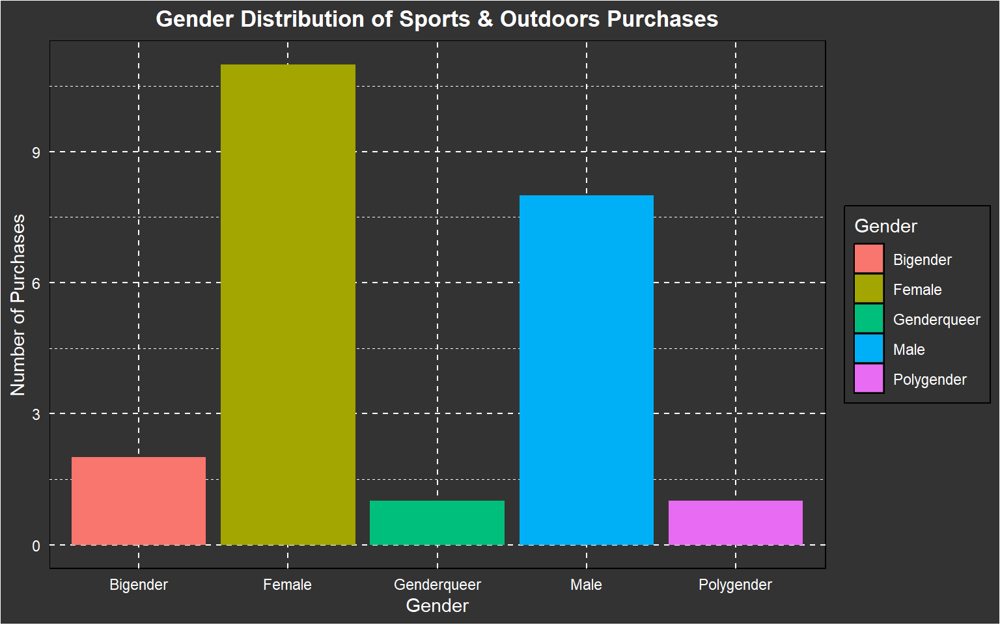
plot_genderamnt_sp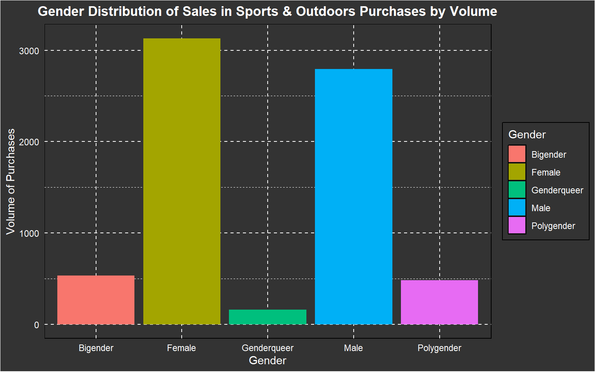
We can clearly see that women make a large number of purchases and have the highest purchase volume. However, men make fewer purchases, but it seems their average purchase amounts are higher. We will balance the dataset by taking an equal number of men and women to evaluate if the purchase volume is still higher among women.
online_orders_filtered <- online_orders %>%
filter(Gender == c("Male","Female"))
# Resumir los montos de compra por género
gender_summary <- online_orders_filtered %>%
group_by(Gender) %>%
summarise(Average_Purchase_Amount = mean(Purchase_Amount, na.rm = TRUE),
Total_Purchase_Amount = sum(Purchase_Amount, na.rm = TRUE),
Purchase_Count = n())
# Mostrar resumen
print(gender_summary)## # A tibble: 2 × 4
## Gender Average_Purchase_Amount Total_Purchase_Amount Purchase_Count
## <fct> <dbl> <dbl> <int>
## 1 Female 262. 20145. 77
## 2 Male 275. 19285. 70# Realizar una prueba t para comparar los montos promedio de compra entre hombres y mujeres
t_test_result <- t.test(Purchase_Amount ~ Gender, data = online_orders_filtered)
# Ver los resultados de la prueba t
print(t_test_result)##
## Welch Two Sample t-test
##
## data: Purchase_Amount by Gender
## t = -0.65828, df = 144.89, p-value = 0.5114
## alternative hypothesis: true difference in means between group Female and group Male is not equal to 0
## 95 percent confidence interval:
## -55.51248 27.77352
## sample estimates:
## mean in group Female mean in group Male
## 261.6262 275.4957# Visualizar la distribución de los montos de compra para hombres y mujeres
ggplot(online_orders_filtered, aes(x = Gender, y = Purchase_Amount, color = Gender)) +
geom_boxplot() +
labs(title = "Distribución de los Montos de Compra por Género",
x = "Género",
y = "Monto de Compra") +
theme(
panel.background = element_rect(fill = "gray20", color = "black"),
plot.background = element_rect(fill = "gray20"),
panel.grid.major = element_line(color = "white", linetype = "dashed"),
panel.grid.minor = element_line(color = "white", linetype = "dashed"),
axis.text = element_text(color = "white"),
axis.title = element_text(color = "white"),
plot.title = element_text(color = "white", hjust = 0.5, face = "bold"),
legend.background = element_rect(fill = "gray20", color = "black"),
legend.text = element_text(color = "white"),
legend.title = element_text(color = "white"))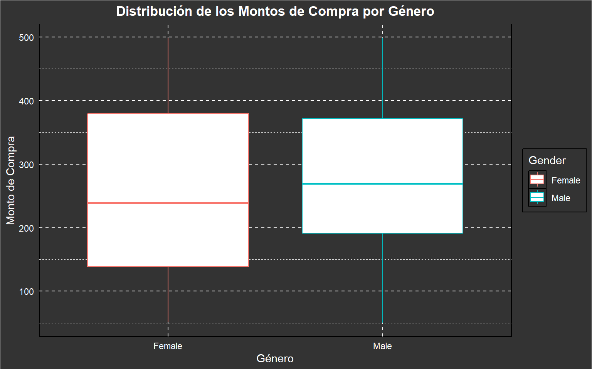
With the results from the t-test and the box plot, we can see that the difference between these two genders is not significant. Therefore, focusing the campaign exclusively on men or women would not lead to a significant difference compared to the other genders, which have a much lower purchase volume.
The t-test result shows a t-value of -0.65828 with a p-value of 0.5114, indicating that there is no statistically significant difference between the mean purchase amounts for women (261.63) and men (275.50). The 95% confidence interval for the difference in means ranges from -55.51 to 27.77, which includes 0, further confirming that the difference is not statistically significant.
Now let’s figure out if there’s an impact for the purchase amount if we consider the age.
plot_agedis_sp <- ggplot(online_orders %>% filter(Purchase_Category == "Sports & Outdoors"), aes(x = Age)) +
geom_histogram(binwidth = 5, fill = "Light Green", color = "Black") +
scale_x_continuous(breaks = seq(0, max(online_orders$Age), by = 5),
labels = seq(0, max(online_orders$Age), by = 5)) +
labs(title = "Age Distribution of Sports & Outdoors Customers",
x = "Age",
y = "Number of Purchases") +
theme(
panel.background = element_rect(fill = "gray20", color = "black"),
plot.background = element_rect(fill = "gray20"),
panel.grid.major = element_line(color = "white", linetype = "dashed"),
panel.grid.minor = element_line(color = "white", linetype = "dashed"),
axis.text = element_text(color = "white"),
axis.title = element_text(color = "white"),
plot.title = element_text(color = "white", hjust = 0.5, face = "bold"),
legend.background = element_rect(fill = "gray20", color = "black"),
legend.text = element_text(color = "white"),
legend.title = element_text(color = "white"))
plot_agedis_sp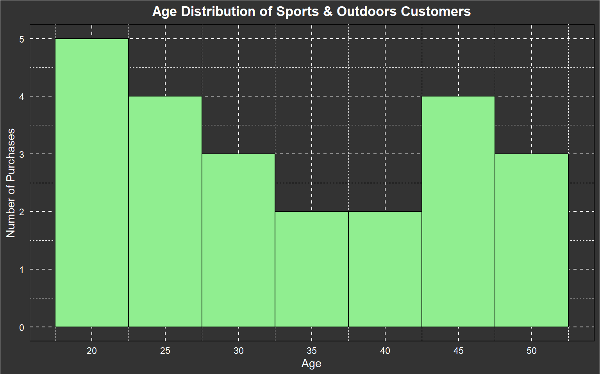
As we can see, most of the sales are focused on the age range of 20 to 30 years, so we can target the ads to this audience, expecting the campaign to have a higher conversion rate and the profits from it to be greater. Now lets check if the income level has any influence on the purchases.
plot_income_sp <- ggplot(online_orders %>% filter(Purchase_Category == "Sports & Outdoors"), aes(x = Income_Level, y = Purchase_Amount, fill = Income_Level)) +
geom_bar(stat = "identity") +
labs(title = "Income Level vs Purchase Amount for Sports & Outdoors",
x = "Income Level",
y = "Total Purchase Amount") +
theme(
panel.background = element_rect(fill = "gray20", color = "black"),
plot.background = element_rect(fill = "gray20"),
panel.grid.major = element_line(color = "white", linetype = "dashed"),
panel.grid.minor = element_line(color = "white", linetype = "dashed"),
axis.text = element_text(color = "white"),
axis.title = element_text(color = "white"),
plot.title = element_text(color = "white", hjust = 0.5, face = "bold"),
legend.background = element_rect(fill = "gray20", color = "black"),
legend.text = element_text(color = "white"),
legend.title = element_text(color = "white")
)
plot_income_sp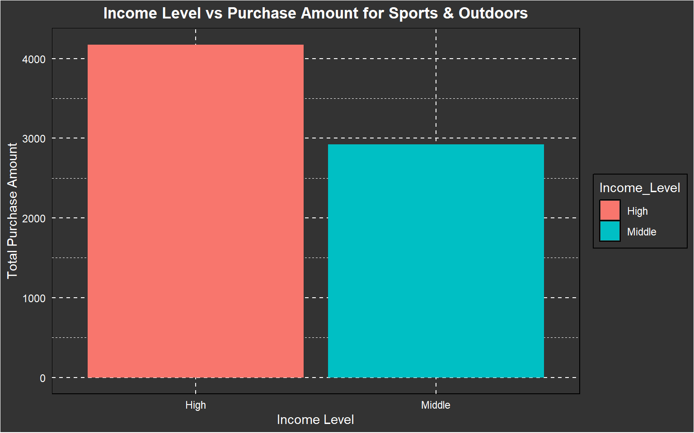
As expected, the group with higher income has had a higher purchase level compared to the middle-income group. Therefore, we can focus a campaign on relatively high-priced products and test whether we can sell products that lead to a higher purchase ticket.
Now lets check, do customer are influenced by discounts, let’s see if this happens evaluating the Discount sensitivity variable:
plot_income_sp <- ggplot(online_orders %>% filter(Purchase_Category == "Sports & Outdoors"), aes(x = Discount_Sensitivity, y = Purchase_Amount, fill = Discount_Sensitivity)) +
geom_bar(stat = "identity") +
labs(title = "Discount Sensitivity vs Purchase Amount for Sports & Outdoors",
x = "Discount Sensitivity",
y = "Total Purchase Amount") +
theme(
panel.background = element_rect(fill = "gray20", color = "black"),
plot.background = element_rect(fill = "gray20"),
panel.grid.major = element_line(color = "white", linetype = "dashed"),
panel.grid.minor = element_line(color = "white", linetype = "dashed"),
axis.text = element_text(color = "white"),
axis.title = element_text(color = "white"),
plot.title = element_text(color = "white", hjust = 0.5, face = "bold"),
legend.background = element_rect(fill = "gray20", color = "black"),
legend.text = element_text(color = "white"),
legend.title = element_text(color = "white")
)
plot_income_sp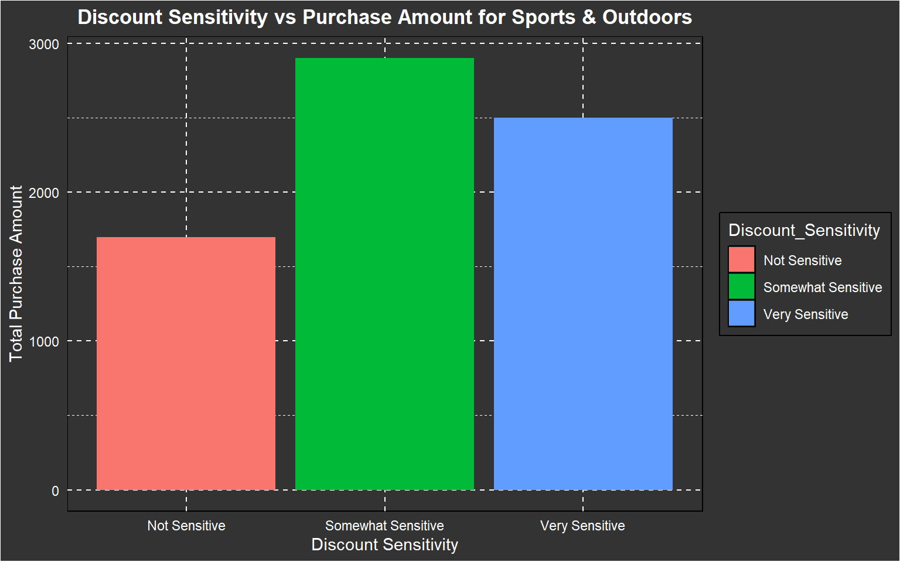
As can be seen in the graph, most customers are sensitive to discounts. However, we cannot confirm that they actually use them. Let’s check if that’s the case.
ggplot(online_orders, aes(x = Discount_Sensitivity, fill = Discount_Used)) +
geom_bar(position = "stack") + # Apilar las barras
labs(title = "Distribución del Uso del Descuento por Sensibilidad al Descuento",
x = "Sensibilidad al Descuento",
y = "Número de Compras") +
scale_fill_manual(values = c("gray", "darkgreen")) + # Opcional: personalizar los colores
theme_minimal() +
theme(
panel.background = element_rect(fill = "gray20", color = "black"),
plot.background = element_rect(fill = "gray20"),
panel.grid.major = element_line(color = "white", linetype = "dashed"),
panel.grid.minor = element_line(color = "white", linetype = "dashed"),
axis.text = element_text(color = "white"),
axis.title = element_text(color = "white"),
plot.title = element_text(color = "white", hjust = 0.5, face = "bold"),
legend.background = element_rect(fill = "gray20", color = "black"),
legend.text = element_text(color = "white"),
legend.title = element_text(color = "white")
)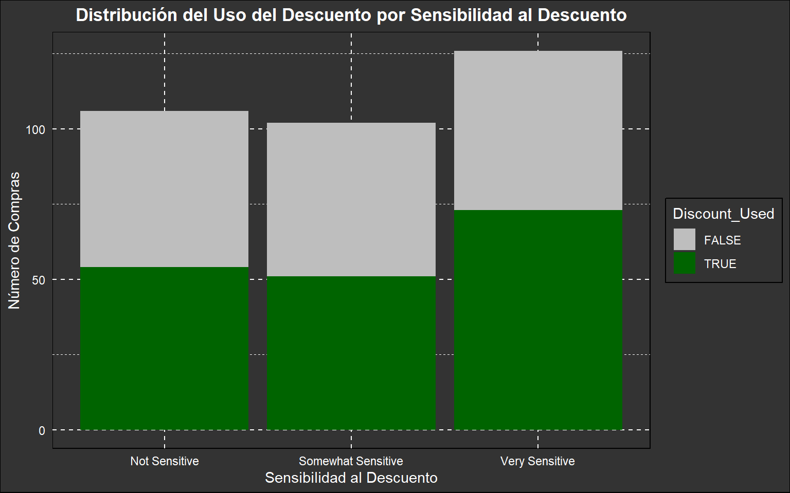
It seems that only customers with a high sensitivity to discounts make considerable use of them. This could mean that the store’s discounts are attractive, but they are not used as much as expected by customers.
To conclude, it would be very useful to evaluate if there is any seasonal trend or peak in sales. This way, we can define two key aspects:
- If we can take advantage of a normal sales increase by further boosting it with ads targeted at a profitable audience.
- To ensure that if there is an increase in sales when the campaign is launched, it is due to the campaign itself and not just the normal seasonal increase in sales.
online_orders <- online_orders %>%
mutate(Month = floor_date(Time_of_Purchase, "month"))
monthly_sales <- online_orders %>%
group_by(Month) %>%
summarise(Total_Purchase_Amount = sum(Purchase_Amount, na.rm = TRUE))
ggplot(monthly_sales, aes(x = Month, y = Total_Purchase_Amount)) +
geom_line(color = "white", linewidth = 1) +
geom_point(color = "red", size = 4) +
labs(title = "Tendencia de Compras a lo Largo del Tiempo",
x = "Fecha (Mes)",
y = "Monto Total de Compras") +
theme(
panel.background = element_rect(fill = "gray20", color = "black"),
plot.background = element_rect(fill = "gray20"),
panel.grid.major = element_line(color = "white", linetype = "dashed"),
panel.grid.minor = element_line(color = "white", linetype = "dashed"),
axis.text = element_text(color = "white"),
axis.title = element_text(color = "white"),
plot.title = element_text(color = "white", hjust = 0.5, face = "bold"),
legend.background = element_rect(fill = "gray20", color = "black"),
legend.text = element_text(color = "white"),
legend.title = element_text(color = "white")
)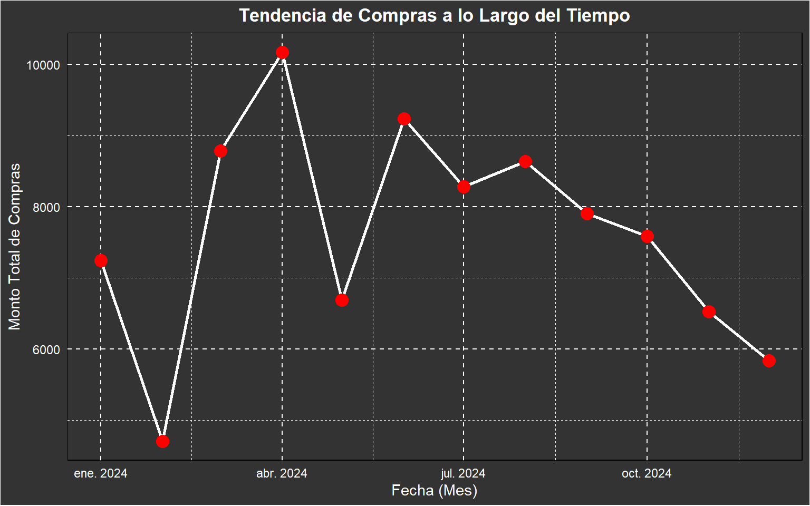
As we can see in the time graph, starting from March and April, there is a natural increase in sales in the online store. This could be due to the season, and it will be a key point in the analysis when comparing the benefits generated by the campaign, since sales will increase regardless.